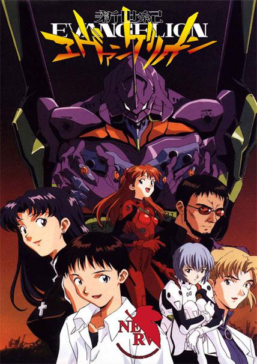
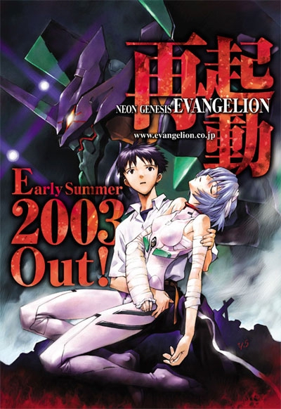
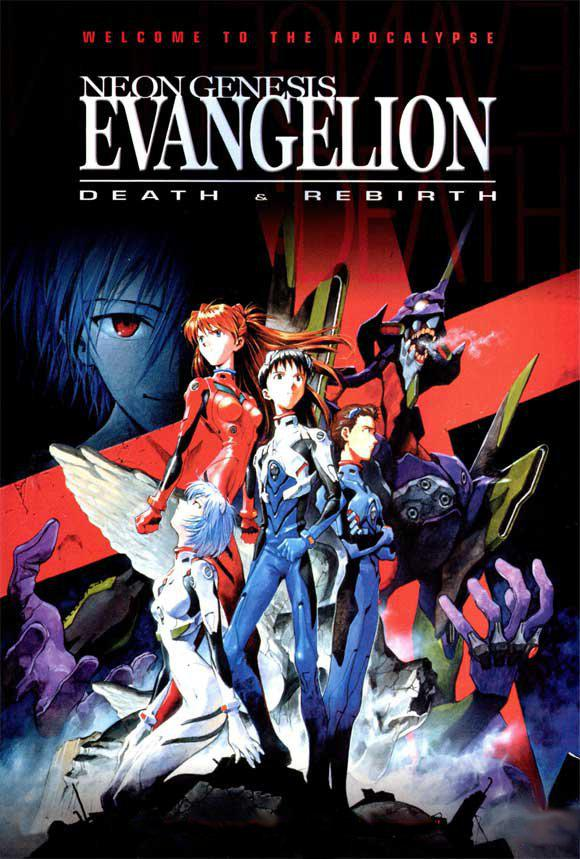
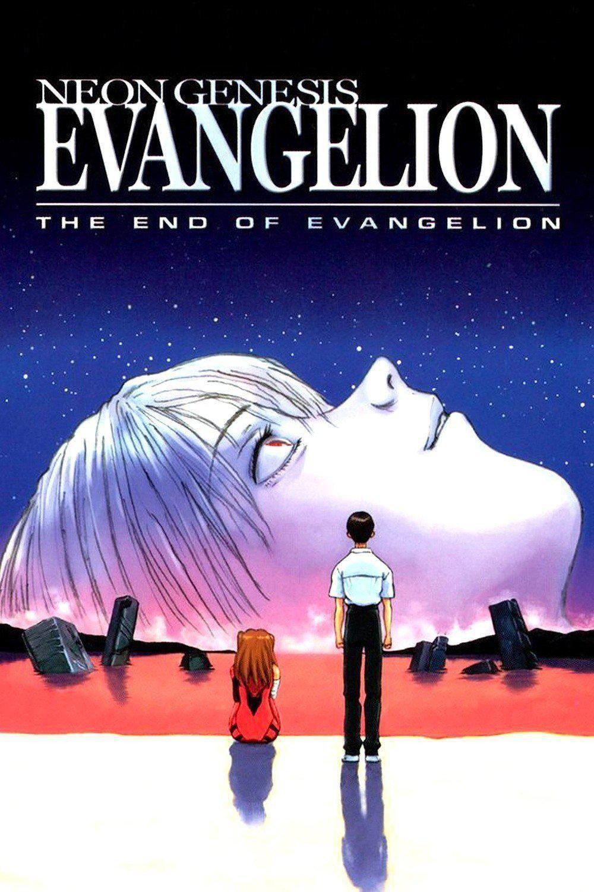
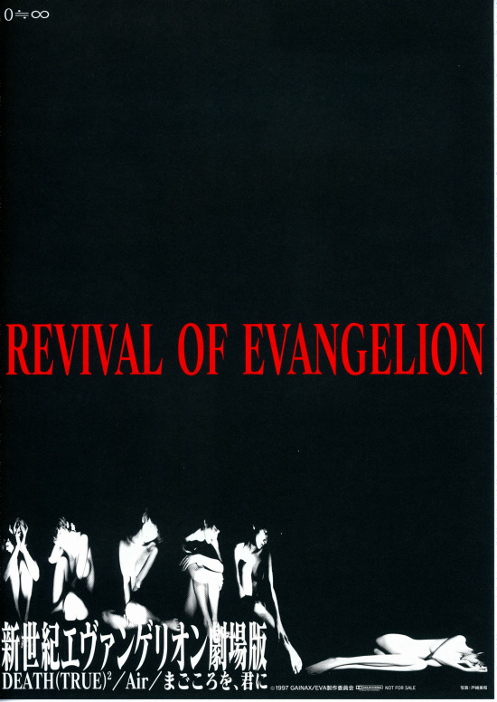
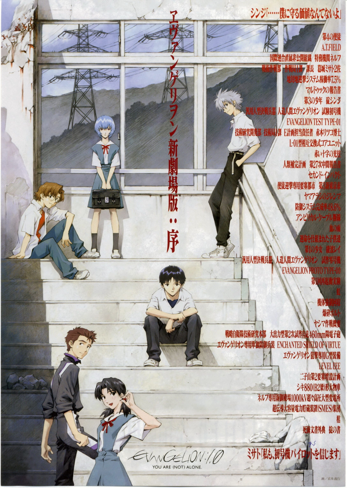
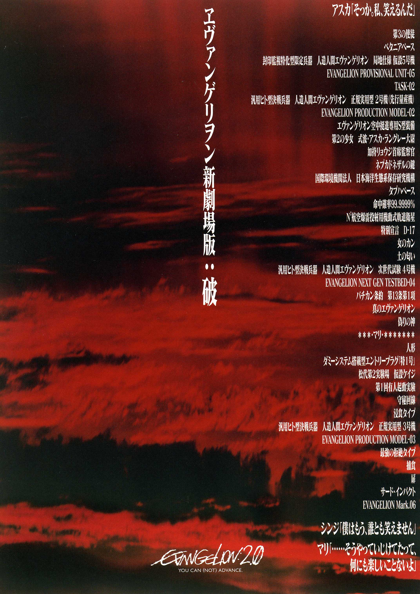
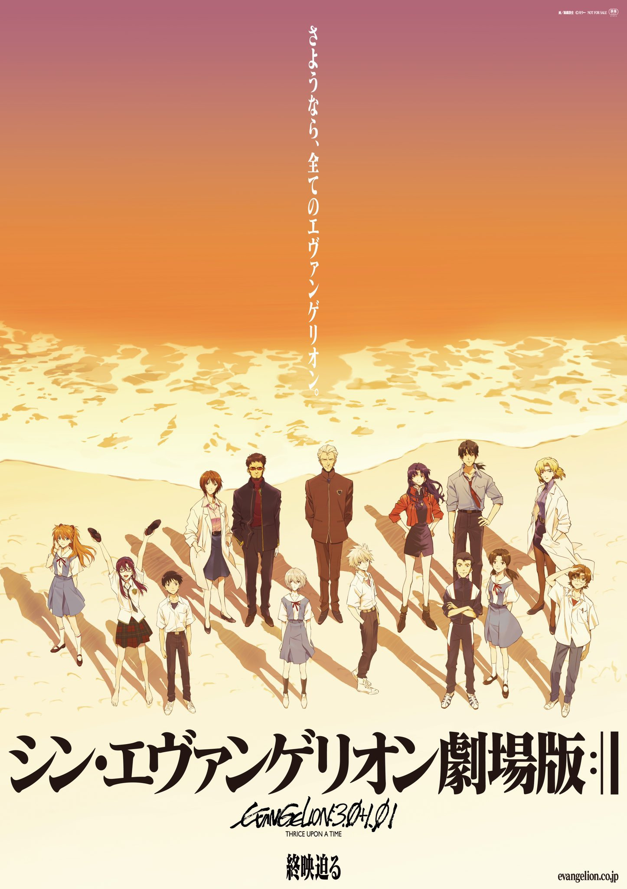

The original TV series

After the "Second Impact", a catastrophe that struck the
world, the world is rebuilt on top of the ruins.
14-year-old Shinji is called by his father, Anchor Wataru,
to the 3rd New Tokyo City. He was expecting
to be
greeted by his father, but instead, he sees a giant creature
called "Apostle" fighting with the army. In
a
desperate situation, Misato Kasei of NERV, a secret service
agency, rescues Shinji and takes him to the
NERV
headquarters under the command of Wataru. However, Shinji is
greeted by his father's cold order to fight
the
Apostles in a giant humanoid robot called "EVA". Shinji, who
had already refused, decided to obey his
father's order after seeing his replacement pilot, Ayabari,
who was seriously injured. In this way,
Shinji,
who has never been trained in combat, is ready to pilot the
EVA's first machine to fight the apostles (angles).
With the incoming Angles, the unidentified Ayapoli, and the
pilot Sosuru Akane Langley from Germany, the
14-year-old has to face challenges far beyond his abilities.
While Anchorwatari is watching everything
unobtrusively, a mysterious plan called the "Human
Replenishment Project" is being realized according to
his
plan!
The remade version of TV series

A remade version of the original TV series. It is to
celebrate the tenth anniversary of EVA enterprise
and
reset the version, the picture and sound have been improved.
Together with the original 26 episodes, the
remade version has a total of 30 episodes. In this version,
episodes 22, 24, 26, and 28 have some new
content added.
Death and Rebirth

The first part of the old movie version. It is divided into
two parts: "DEATH" and "REBIRTH". "DEATH" is
based on the content of the first to the 24th episodes of
the original TV anime and is edited into a
summary chapter. The content of "New Life" follows the
content of episode 24.
After the 17th Angle was eliminated, SEELE gave orders to
NERV to execute the "Human Replenishment
Program" for EVA Prime. SEELE decided that this was an act
of mutiny and decided to destroy NERV
completely.
At dawn, the NERV headquarters is suddenly attacked by the
Strategic Self-Defense Force, who massacre
the NERV personnel inhumanely. To protect the pilot, Misato
Katsura ordered Asuka, who had a nervous
breakdown, to be put on the second plane and placed in the
depths of the lake, while she went to rescue
Shinji herself. But at this time, Shinji was already on the
verge of a nervous breakdown.
Love is Destructive

The second part of the old movie version. The mysterious pilot of EVA Rei Ayanami, arrives at the red
pool of the central dogma at the bottom of
NERV at the time of her appointment with Gento Ikari. It seems that her fate will end here.
At this critical moment, Misato Katsura not only has to complete the investigation into the truth of
the
Second Catastrophe and the Human Replenishment Project as assigned by Ryoji Kaji, but also has to
protect Shinji and Asuka and prevent SEELE from physically contacting the First and Second unit.
Revival of Evangelion.

The Re-edited version of old theatrical version movies. It contains the content of the first part and
the second part of the old movie version.
Begining

The fisrt movie of new theatrical version Evangelion. The new theatrical version reboots the entire
story.
After the Second Impact, a catastrophe that struck
the world, the world is rebuilt on top of the ruins. 14-year-old Shinji is called by his father,
Gento Ikari, to the 3rd New Tokyo City. He expected to be greeted by his father, but instead he saw
a
giant creature called "Apostle (angle)" fighting with the army. In a desperate situation, Misato
Kasei of
NERV, a secret service agency, rescues Shinji and takes him to the NERV headquarters under the
command
of Wataru. However, Shinji is greeted by his father's cold order to fight the Apostles in a giant
humanoid robot called "EVA".
Shinji, who had already refused, decided to obey his father's order after seeing his replacement
pilot,
Ayabari, who was seriously injured. In this way, Shinji, who had never been trained for combat, was
ready to pilot the EVA Primer to fight the Apostles.
The fate of the world is entrusted to a 14-year-old boy, and the "human completion plan" hidden by
the
"Second Impact" seems to have begun to move. Gento, who has all the answers, just observes without
moving, as if everything has already been written in the script!
Breaking

The second movie of new theatrical version Evangelion. On the way back from visiting his mother's grave,
Shinji and Misato Katsuragi are attacked by the Seventh Apostle, and at the critical moment, the No. 2
unit is able to defeat the opponent. Unlike the quiet Ayabari , Asuka is confident and even a bit
arrogant, and in the days they spend with Shinji, they make a lot of jokes with each other. The three of
them piloted the Zero, the First and the Second, respectively, to resist the fierce attack of the Eighth
Apostle, and in the process, a faint love affair quietly sprouted in the hearts of these four young men
and women. Soon after, the ninth and tenth apostles descended one after another, Shinji and they faced
the cruel test of life and death.
Q

The third movie of new theatrical version Evangelion. Fourteen years ago, the awakening of the first
unit of the suspected deification brought about the
nearly third shocks, causing the world to undergo unprecedented changes. After that, Misato Katsuragi
and other former NERV members left and formed the Wille to fight against Seele and NERV, and Wille
ordered Asuka and Shinri to retrieve the Hatsune Mikoto and Shinji, who was sealed in satellite orbit,
but forbade Shinji from boarding the first unit. Sensing the hostility around him, a dumbfounded Shinji
follows Rei on board the suddenly invading Flight 9, and returns to the battered NERV headquarters.
Here, he unexpectedly meets Ayami, whom he has longed for, and learns from his father that he will be
piloting the 13th plane together with the beautiful boy Kaworu. The 14-year gap, the vicissitudes of
change, and emotional entanglements overwhelm Shinji. But the seemingly gentle Kaoru reveals the
unbelievable truth for him!
Final

My favorite one. The fourth movie of new theatrical version
Evangelion. Shinji, who became the culprit of the "Third Impact", is depressed all day long. How can he
recover from the sadness and save the world.